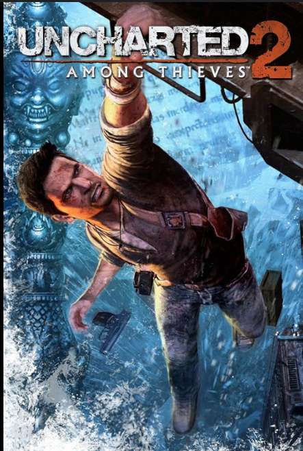
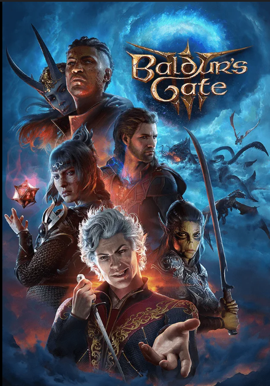

Here's a list of some of my favorite video games, but not in any specific order, because the order often changes. Am I simping for some of these characters? Obviously. Is it to make up for my chronic loneliness? Probably. Is the soundtrack for every one of these games on my playlist? Definitely.
-

Final Fantasy VII Remake (Cloud's got moves)
-
Ni No Kuni: Wrath of the White Witch (a Ghibli game?!)
-
Dust: An Elysian Tail (it's so pretty! Even if it's sad!)
-
Uncharted 2 (and whole series ngl)

-
Baldur's Gate 3 (a hot vampire? hell yea)

-
Genshin Impact (don't ask how much I've spent)